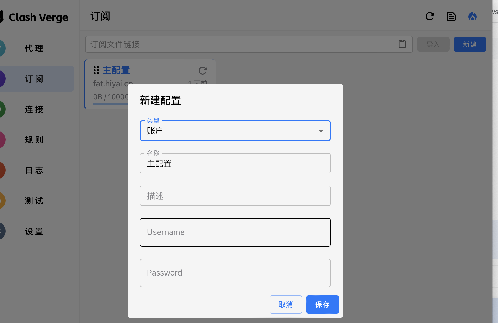
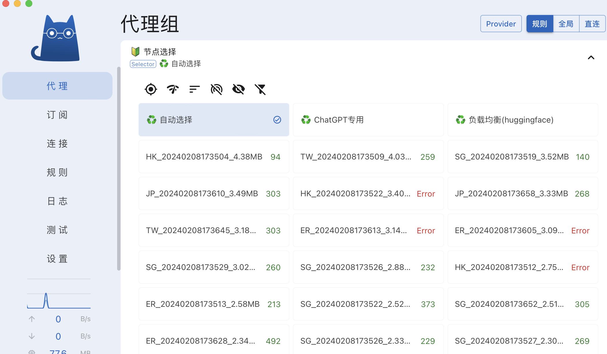

PlanB
!!!必看!!! 小猫的问题不要在TB上讨论,聊天审核可能会封禁
!!!注意!!! 实在搞不定可以要求远程,或者加VX沟通
!!!注意!!! 或者加添加飞书沟通
要接管全部流量,代码中运行,参考2.5 开启tun mode模式
有问题可以让远程协助
https://www.todesk.com/
https://sunlogin.oray.com/download
0 准备
0.1注册登录
0.2 充值余额
购买的兑换码充值，或者直接支付宝扫码充值
主站：https://www.aider.host/panel/topup
备用站：https://fat.iseek.icu/panel/topup

0.3 购买流量额度(必须购买支持加速共享的)
主站：https://www.aider.host/panel/quota
备用站：https://fat.iseek.icu/panel/quota

1 下载后安装
1.1 下载地址(Linux终端版直接看步骤7)
Windows64位选
Windows32位选
Windows ARM芯片选
苹果M系列选
MacOS老款选
Linux系统(终端版直接看步骤7)
1.2 安装问题处理
1.2.1 MacOS报错处理(MacOS没有报错可以无视)
执行
xattr -d com.apple.quarantine /Applications/Clash\ Verge.app
1.2.2 Linux下 安装运行以及问题解决(Window和MacOS用户忽略这部分)
1.2.2.1 Linux deb包安装，根据deb包文件名不同做适当调整
sudo dpkg -i mat_1.6.5_amd64.deb
Ubuntu24.04提示缺少库libwebkit2gtk-4.0看 https://blog.csdn.net/qq_33247897/article/details/139866179
使用文本编辑器vim或者gedit都可以，这里使用gedi
sudo apt install gedit
sudo gedit /etc/apt/sources.list.d/ubuntu.sources
打开之后，在里面新增以下内容
Types: deb
URIs: http://br.archive.ubuntu.com/ubuntu/
Suites: jammy noble-updates noble-backports
Components: main restricted universe multiverse
Signed-By: /usr/share/keyrings/ubuntu-archive-keyring.gpg
Types: deb
URIs: http://security.ubuntu.com/ubuntu/
Suites: jammy-security
Components: main restricted universe multiverse
Signed-By: /usr/share/keyrings/ubuntu-archive-keyring.gpg
更新源，安装libwebkit2gtk
sudo apt update
sudo apt install libwebkit2gtk-4.0-dev
1.2.2.2 Linux便携版本AppImage，根据AppImage文件名不同做适当调整
chmod +x mat_1.6.5_amd64.AppImage
./mat_1.6.5_amd64.AppImage
如果报错了，提示缺少fuse库
sudo add-apt-repository universe
sudo apt install libfuse2
如果Ubantu(<=21.10)，则执行
sudo apt install fuse libfuse2
sudo modprobe fuse
sudo groupadd fuse
user="$(whoami)"
sudo usermod -a -G fuse $user
Ubuntu18等老版本报错提示找不到GLIBC_2.28, 要执行一下命令更新到GLIBC_2.28
sudo su -c 'echo "deb http://security.debian.org/debian-security buster/updates main" >> /etc/apt/sources.list' root
sudo apt-key adv --keyserver keyserver.ubuntu.com --recv-keys 112695A0E562B32A 54404762BBB6E853
sudo apt update
sudo apt install libc6 libc6-dev -y
对于ubuntu 24.4

解决的办法有四种，第四种解决方法，一劳永逸。
1、启用用户名称空间： sudo sysctl kernel.unprivileged_userns_clone=1，但每次开机都要运行该命令。
2、给报错信息给出的文件授权：sudo chown root /chrome-sandbox && sudo chmod 4755 /chrome-sandbox，即解决网易云音乐该问题时的操作，但不适用于picgo。
3、运行的时候加上免沙箱命令：--no-sandbox
4、开机时自启动用户名称空间：echo 'kernel.unprivileged_userns_clone=1' > /etc/sysctl.d/userns.conf
该命令只适用于Debian/Ubuntu系列Linux发行版，未测试其他发行版。
2 登录账号
2.1登录
2.1.1 点击 订阅->「新建」
填入账号密码后点击「保存」

2.1.2 右键->「使用」

2.2 更新节点信息(非必须)
点击代理 -> Provider -> 更新全部

2.3 代理
-
一般情况选规则->节点选择->自动选择 或 自动选择(低延时) 便可

-
如果有些网站没有被规则涵盖，可以切换到全局(全局模式所有经过小猫的流量都会走节点，包括国内站点)
-
全局模式里选自动或低延时，非必须不建议用全局模式

2.4 开启系统代理,修改本地代理端口
-
一般使用开启系统代理即可
-
要关闭代理可以这个页面关闭系统代理
-
有些软件或脚本无法使用系统代理,请开启2.5中的Tun模式
-
注意关闭软件，可能系统代理配置不会恢复 如果遇到不打开软件就无法上网的问题，可以手动关闭系统代理

端口Mixd Port设置改为7890 ->配套下载工具用的话一定要改

2.5 开启tun mode接管网卡(非必须,看需要->建议一般情况下不要开启)
2.5.1 授权内核(非MacOS无视)
点击Clash内核,点击授权

2.5.2 安装服务模式

2.5.3 开启tun模式和服务模式(建议一般情况下不要开启，除非有些软件不能使用系统代理)

2.6 如果原来装了小猫建议先删除或者删除配置
原来的配置可能导致配置混乱，而不能配置成功
设置里面找到「应用目录」

点击箭头后打开配置的文件夹，退出小猫后，将文件夹内的文件全部删除，重启APP，重新配置

往下内容是huggingface下载部分,只用小猫可以不看===>往下内容是huggingface下载部分,只用小猫可以不看
往下内容是huggingface下载部分,只用小猫可以不看===>往下内容是huggingface下载部分,只用小猫可以不看
往下内容是huggingface下载部分,只用小猫可以不看===>往下内容是huggingface下载部分,只用小猫可以不看
3 下载工具Motrix(适用于数量少大文件 LFS文件)
3.1 下载安装好工具
3.2 设置代理(开启了tun mode可以忽略)
启用代理,并地址填写: http://127.0.0.1:7890

3.3 添加下载链接
注意:有些模型可能需要token下载,不能直接添加链接到下载工具,勾选高级，在请求头添加token(点击获取token)


4 批量下载
批量下载工具依赖步骤3中的工具Motrix,需要该工具在开启状态,并可以正常下载
4.1 图形工具
4.1.0 基本设置(代理，Aira2设置，储存目录，hf token)

4.1.1 解析项目
有些项目需要huggingface token

4.1.2 提交下载任务

4.2 HuggingFaceModelDownloader(命令行工具)
地址:https://www.123pan.com/s/9RSLVv-Zbv8v.html
下载自己系统对应文件

4.1.1 获取hg的token(非必须,有些项目需要)
Settings

Access Tokens
 4.1.2 打开powershell等,执行执行命令
4.1.2 打开powershell等,执行执行命令
如下载程序放到目录:C:\Users\abc>
参数-m:指定下载模型
参数-d:指定下载数据集
参数-s:指定保存路径,建议用全路径,否则会保存在Motrix默认目录下
# 非系统盘,如D盘,需要先切换到D盘,执行 D:\
cd C:\Users\abc
# 下载模型 参数-m 参数-s指定保存路径,建议用绝对路径,否则会下载到
hfdownloader_windows_amd64_1.2.9.exe -m TheBloke/WizardLM-13B-V1.0-Uncensored-GPTQ -c 10 -s MyModels
# 下载数据集 参数-d
hfdownloader_windows_amd64_1.2.9.exe hfdownloader -d facebook/flores -c 10 -s MyDatasets
#有些项目需要带token下载,token_xxxx替换为4.1.3中获取的token
hfdownloader_windows_amd64_1.2.9.exe hfdownloader -d facebook/flores -c 10 -s MyDatasets -t token_xxxx
如果成功则会有类似打印
 而且Motrix下载工具中,有相应的任务添加
而且Motrix下载工具中,有相应的任务添加

5 git工具(适用于数量多小文件)
下载地址 https://git-scm.com/
5.1 git工具设置代理
打开命令行工具(cmd或powershell)
git config --global https.proxy http://127.0.0.1:7890
git config --global http.proxy http://127.0.0.1:7890
git config --global http.sslverify false
5.2 打包下载hg项目
如:
git clone https://huggingface.co/datasets/declare-lab/TangoPromptBank

6 代码测试
6.1 开启tun mode
6.2 代码测试
from transformers import AutoTokenizer
checkpoint = "distilbert-base-uncased-finetuned-sst-2-english"
tokenizer = AutoTokenizer.from_pretrained(checkpoint)
7 加速器Linux终端版
7.1.1 获取token
方法1 网页版获取
https://aider.email/panel/profile

方法2 桌面版获取

7.1.2 安装
7.1.2.1 x86架构(英特尔处理，AMD处理器)
wget https://cors.isteed.cc/github.com/zzpu/matui/releases/download/alpha/tpclash-mat-linux-amd64
chmod +x tpclash-mat-linux-amd64
# 例子中的token替换成自己的token,要查看token到https://aider.email/panel/profile
# 如果不想tpclash接管网卡，可以去掉参数-f，去掉参数-f后，需要自行设置代理，类似7.1.3测试那样
# 例子
sudo ./tpclash-mat-linux-amd64 install -f -t 46eb213ffeeb426cafd1043c71426542
sudo systemctl daemon-reload
sudo systemctl start tpclash
#查看是否启动成功
sudo journalctl -fu tpclash
#或者
sudo netstat -apn | grep 7890
👌 TPClash 安装完成, 您可以使用以下命令启动:
● 启动服务: systemctl start tpclash
● 停止服务: systemctl stop tpclash
● 重启服务: systemctl restart tpclash
● 开启自启动: systemctl enable tpclash
● 关闭自启动: systemctl disable tpclash
● 查看日志: journalctl -fu tpclash
● 重载服务配置: systemctl daemon-reload
7.1.2.2 ARM架构(树莓派，英伟达json，海思服务器等)
wget https://cors.isteed.cc/github.com/zzpu/matui/releases/download/alpha/tpclash-mat-linux-arm64
chmod +x tpclash-mat-linux-arm64
# 例子中的token替换成自己的token,要查看token到https://aider.email/panel/profile
# 如果不想tpclash接管网卡，可以去掉参数-f，去掉参数-f后，需要自行设置代理，类似7.1.3测试那样
# 例子
sudo ./tpclash-mat-linux-arm64 install -f -t 46eb213ffeeb426cafd1043c71426542
sudo systemctl daemon-reload
sudo systemctl start tpclash
#查看是否启动成功
sudo journalctl -fu tpclash
#或者
sudo netstat -apn | grep 7890
 👌 TPClash 安装完成, 您可以使用以下命令启动:
👌 TPClash 安装完成, 您可以使用以下命令启动:
● 启动服务: systemctl start tpclash
● 停止服务: systemctl stop tpclash
● 重启服务: systemctl restart tpclash
● 开启自启动: systemctl enable tpclash
● 关闭自启动: systemctl disable tpclash
● 查看日志: journalctl -fu tpclash
● 重载服务配置: systemctl daemon-reload
对于centos等老系统，无法实现tun全局接管的，可以试试proxychains
yum install epel-release
yum install -y proxychains-ng
vi /etc/proxychains.conf
# 将socks4 127.0.0.1 9095改为
http 127.0.0.1 7890
#测试
proxychains wget https://www.google.com
7.1.2.3 容器
wget https://cors.isteed.cc/github.com/zzpu/matui/releases/download/alpha/tpclash-mat-linux-amd64
chmod +x tpclash-mat-linux-amd64
# 例子中的token替换成自己的token,要查看token到https://aider.email/panel/profile
#
# 如果提示/data目录没有权限，通过-d xxxx修改程序目录，比如/home/xxxx(不要傻傻的直接用，只是举例)
# 大概率会报错不用管
./tpclash-mat-linux-arm64 -t 46eb213ffeeb426cafd1043c71426542 -d /home/xxxx
#.eg 启动代理（通过-d xxxx修改程序目录的要用具体目录替换/data）
/data/clash/xclash -f /data/clash/xclash.yaml -d /data/clash
#然后其他窗口设置代理
export HTTP_PROXY=http://127.0.0.1:7890
export HTTPS_PROXY=http://127.0.0.1:7890
#或者
netstat -apn | grep 7890
如果./tpclash-mat-linux-arm64 -t 46eb213ffeeb426cafd1043c71426542 -d /home/xxxx报错，类似，不用管

如果文件tpclash-mat-linux-arm64下载有问题可以本地下载完再上传

7.1.3 测试
#如果内核支持tun模式，可以直接接管网卡，无需设置代理参数
wget -c -r -np -k -L -p https://www.youtube.com
#如果内核不支持tun模式，需设置代理参数
wget -c -r -np -k -L -p -e "https_proxy=http://127.0.0.1:7890" https://www.youtube.com
7.1.4 查看代理详情,切换节点
如果操作，进入 http://ip:9090/ui -> ip改为具体的地址
7.1.4.1 如本机访问，浏览器访问http://127.0.0.1:9090/ui
API Base 填http://127.0.0.1:9090，点击 Add

7.1.4.2 如果其他机器，比如IP为192.168.1.111，则浏览器访问http://192.168.1.111:9090/ui
API Base 填http://192.168.1.111:9090，点击 Add

注意！！！！！！！！！！！！
7.1.4.2.1 如果不能访问，请检查端口(9090)访问是否开放,放开端口参考
对于 ufw 防火墙（Ubuntu/Debian）:
sudo ufw allow 9090
对于 firewalld（CentOS/RHEL/Fedora）:
sudo firewall-cmd --zone=public --add-port=9090/tcp --permanent
sudo firewall-cmd --reload
对于 iptables：
sudo iptables -A INPUT -p tcp --dport 9090 -j ACCEPT
7.1.4.2.2 不想放开端口，参考SSH转发
ssh -L 9090:远程主机地址:远程端口 用户名@远程主机
例如：ssh -L 9090:192.168.1.100:9090 user@remote_host
7.1.4.3 选择 「自动选择」或 「自动选择(低延时)」

7.1.4.4 对于centos等，可能不成功，配置里面TUN IP Stack切换下(gVisor,System,LWIP都试试) 
8 附录(问题和解决方案)
8.1 neatdownloadmanager下载工具
对于MacOS系统可能会被Motrix不稳定困扰,如果不需要批量下载可以用这个工具
8.1.1 设置代理

8.1.2 设置缓存路径和文件保存路径,以及默认并发线程

8.1.3 浏览器插件安装(可选)
可以让neatdownloadmanager接管浏览器下载

8.2 浏览器插件SwitchyOmega 3(ZeroOmega)安装(可选)
系统有时可能各种原因设置系统代理不生效，可以直接浏览器安装代理切换插件
 设置好代理地址和端口后保存，然后就可以切换浏览器代理为proxy
设置好代理地址和端口后保存，然后就可以切换浏览器代理为proxy

8.3 删除老版本数据
如果遇到类似这种情况(配置不兼容,混乱)，执行删除所有配置文件

点击「应用目录」，打开配置文件目录，退出app后，删除里面的所有东西